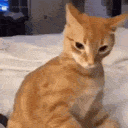

hello, i'm lezi,

cool stuff i build.
About Me
im a developer who builds JavaScript and TypeScript projects and random web experiments, balancing clean code with a fondness for cats. meow ˶^•ﻌ•^˵
Node.js
JavaScript
TypeScript
Python
projects.
contacts.
let's connect!
feel free to reach out for collaborations, questions, or just to chat.
